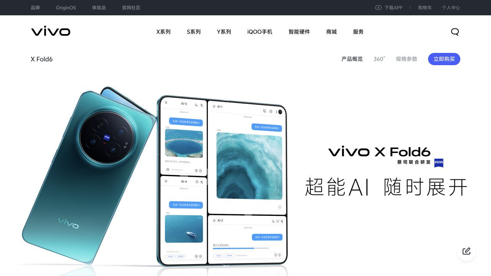

Selected Work
01 / Product Marketing / GTM / Launch
vivo X Fold6
Turning Product Capabilities into User Value
围绕旗舰折叠新品，把续航、通信、AI Agent 与多任务能力转译为可感知的用户场景，并参与内容、演示与正式上市交付。

01 / Context
旗舰新品的价值表达，不止是功能介绍。
在 vivo 产品营销实习期间，我参与 X Fold6 旗舰折叠新品上市项目，工作覆盖用户与竞品洞察、场景研究、卖点表达、Keynote、演示素材、彩排与上市反馈。
这是一个真实商业项目。公开 Case 只使用官方已发布产品信息和本人重绘框架，不展示任何内部材料。
02 / Challenge
技术能力不等于用户价值。
折叠旗舰拥有大量能力：续航、通信、AI Agent、多任务与移动生产力。Product Marketing 的问题不是继续增加功能解释，而是让用户听得懂、能感知、记得住。
How do we turn technical capabilities into user value?
03 / User & Scenario
从高频移动工作与全天使用场景出发。
公开可描述的核心情境包括商务白领、高频移动办公、差旅、稳定连接与工作娱乐切换。这里不是 vivo 内部正式用户画像，也不使用内部研究数据。
04 / Framework
从能力证据，到传播表达。
- 01Product Capability
- 02User Need
- 03Scenario
- 04User Benefit
- 05Value Proposition
- 06Communication
05 / Selected Thinking
把功能放回用户的一天里。
Signal / CapabilityUser NeedScenarioValue
AI Agent减少移动工作中的信息摩擦商务工作与资料处理AI Productivity
Vibe Coding随时进入创造状态移动开发与创作Mobile Productivity
通信能力保持稳定连接出差、演唱会与大型活动Reliable Connection
综合旗舰体验工作与娱乐自然切换从白天到夜晚白天 AI 生产力，晚上演唱会神器
06 / Launch Workflow
判断必须进入真实交付。
我不仅参与前期表达，也协同 GTM、商务、产品、设计、导演组、KOL 与外部执行团队推进讲稿、Keynote、演示素材、彩排和提词版本。
- 01Insight
- 02Strategy
- 03Content
- 04Keynote
- 05Demo
- 06Rehearsal
- 07Launch
- 08Feedback
07 / Public Result
只陈述可以公开证明的结果。
- 部分本人提出的表达进入正式 Keynote 与讲稿。
- 支持产品故事、演示素材与旗舰新品正式发布交付。
- 参与上市后用户反馈、竞品口碑与传播表现复盘。
- 为后续内容优化与策略迭代提供结构化输入。
08 / Learning
解释更多功能，并不会自动产生更强价值。
Good product marketing helps users understand why the product matters.